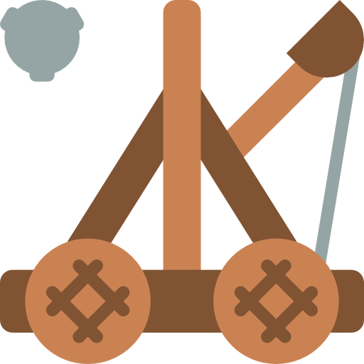
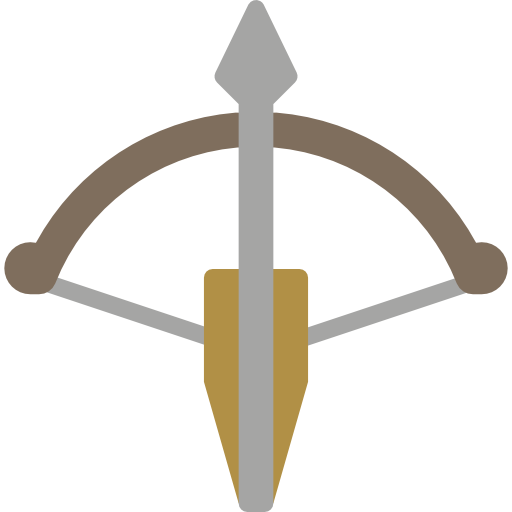
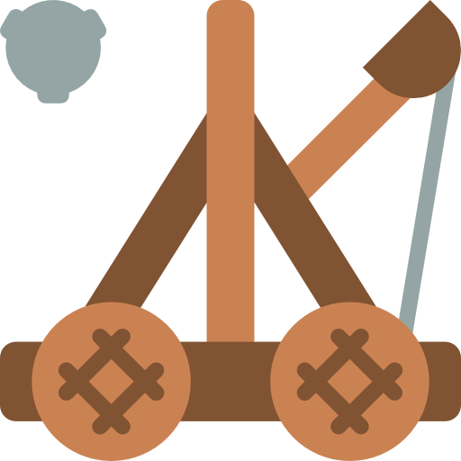
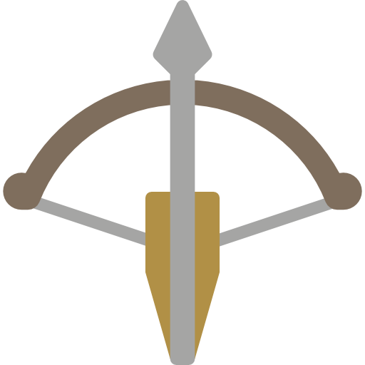

- R
- O
- D
- R
- I
- G
- O
Chevalier Pro
Chevalier Pro
Je suis un chevalier né en 485
Je recherche un emploi dans une armée
Je possède des compétences en gestion et stratégie
Merci de me contacter par voie postale

 





1. Bataille de Vouillé - printemps 507 - Attaquant Francs
2. Siège d'Arles - 507-508 - Défenseur Francs et formation sur l’arbalète
3. Bataille du Mont Badon - 516 - Attaquant bretons sur es saxons
4. Siège de Graven - 518 - Commandant de l'armée gravenienne